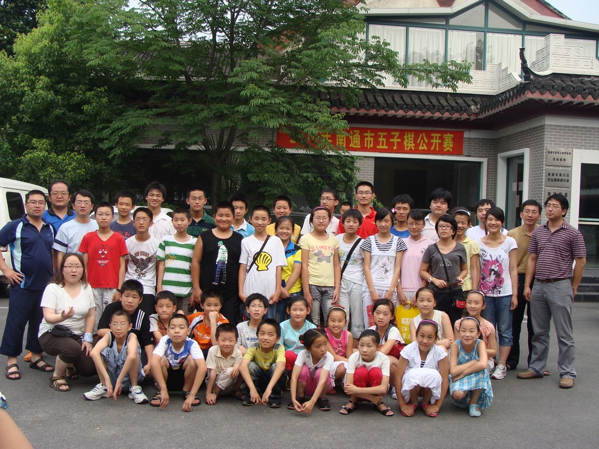

祝贺茗弈七夜南通比赛殿军
首页
茗弈阁
#1 祝贺茗弈七夜南通比赛殿军 作者：弱惜 发表时间：2010-7-19 18:36:19
第一次比赛，成绩很好呀，祝贺！［ 茗弈小刀 于 2010-7-25 17:26:59 时奖励此帖[金币加 20 威望加1］
#2 Re:祝贺茗弈七夜南通比赛殿军 作者：极地剑客 发表时间：2010-7-19 18:55:31
七夜是MM吗~~~~~~~~~~~~~
#3 Re:祝贺茗弈七夜南通比赛殿军 作者：越狱行辕 发表时间：2010-7-19 19:30:45
殿军是第四吗
#4 Re:祝贺茗弈七夜南通比赛殿军 作者：茗弈七夜 发表时间：2010-7-19 19:49:28
貌似我必须出来一下了，本人男性，的确是第四名。谢谢师姐鼓励！［ 茗弈小刀 于 2010-7-31 6:50:32 时奖励此帖[金币加 20 威望加1］
#5 Re:祝贺茗弈七夜南通比赛殿军 作者：黄药师 发表时间：2010-7-19 20:39:02

找到七夜了吗？
找到我了吗？
［ 茗弈小刀 于 2010-7-25 17:28:04 时奖励此帖[金币加 20 威望加1］
#6 Re:祝贺茗弈七夜南通比赛殿军 作者：弱惜 发表时间：2010-7-19 21:58:20
只看到朱朱，七夜在哪，你在哪，注明第几排第几个，OK？黄药师是前第二排左边第一个吗？
#7 Re:Re:祝贺茗弈七夜南通比赛殿军 作者：黄药师 发表时间：2010-7-19 22:04:55
引用：
原文由 弱惜 发表于 2010-7-19 21:58:20 :
只看到朱朱，七夜在哪，你在哪，注明第几排第几个，OK？黄药师是前第二排左边第一个吗？
第二排左边第一个是有志青年
#8 Re:祝贺茗弈七夜南通比赛殿军 作者：弱惜 发表时间：2010-7-19 22:24:34
有志居然是MM，你在哪，七夜在哪？
#9 Re:祝贺茗弈七夜南通比赛殿军 作者：行云流水 发表时间：2010-7-19 22:32:17
第二排左边第一个是有志青年
黄药师数学不行额！
#10 Re:祝贺茗弈七夜南通比赛殿军 作者：张轶峰 发表时间：2010-7-19 22:53:22
有志大哥是第三排左面第一个，不知该说楼上的什么好
#11 Re:祝贺茗弈七夜南通比赛殿军 作者：gerbo 发表时间：2010-7-19 23:54:51
红衣少年事第三排左边第一个，不知该说楼上什么好
#12 Re:祝贺茗弈七夜南通比赛殿军 作者：虎哥 发表时间：2010-7-20 3:15:44
有志老师在二、三、四排之间飘乎不定
但是白白我是找到了，可爱
#13 Re:祝贺茗弈七夜南通比赛殿军 作者：大雪无痕 发表时间：2010-7-20 7:37:27
视角不同排数不同，有人从后往前数，有人从前往后数
是风动？幡动？还是心动？？？

#14 Re:Re:祝贺茗弈七夜南通比赛殿军 作者：黄药师 发表时间：2010-7-20 8:08:44
引用：
原文由 行云流水 发表于 2010-7-19 22:32:17 :
第二排左边第一个是有志青年
黄药师数学不行额！
#15 Re:祝贺茗弈七夜南通比赛殿军 作者：真树 发表时间：2010-7-20 10:02:36
 恭喜恭喜，，，
恭喜恭喜，，，
#16 Re:祝贺茗弈七夜南通比赛殿军 作者：水月 发表时间：2010-7-20 13:47:46
我露了半张脸，但是看起来还是很像坏人。。。我前面的mm是纪香么？
#17 Re:祝贺茗弈七夜南通比赛殿军 作者：陈克众 发表时间：2010-7-24 14:09:34
祝贺七夜，感谢你带我进了茗弈。呵呵 ［ 茗弈小刀 于 2010-7-25 17:27:51 时花20金币送鲜花一朵］
#18 Re:祝贺茗弈七夜南通比赛殿军 作者：茗弈小刀 发表时间：2010-7-25 17:28:50
臭小子以后照相记得和组织靠拢点。
#19 Re:祝贺茗弈七夜南通比赛殿军 作者：极地剑客 发表时间：2010-7-26 14:50:32
16楼说清楚啊~哪里有MM?第几排几号?左数右数?
#20 Re:祝贺茗弈七夜南通比赛殿军 作者：弈小马 发表时间：2010-9-13 18:25:30